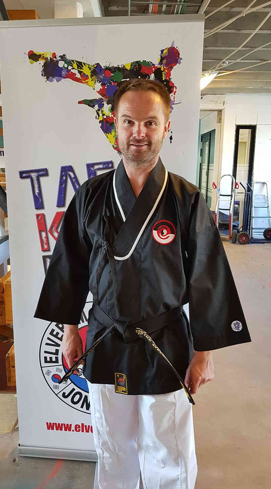

Alder ingen hindring for å klare svartbeltegradering
Publisert: 2018-07-07 | Kategorier: Ukategorisert

30. juni besto Øistein Røste (42) 1. Dan under TTUs tradisjonsrike sommerfestival på Elverum. – Både fysisk og mentalt følte jeg meg godt forberedt til graderingen.
Taekwondo er tuftet på verdier som respekt, disiplin, fokus, selvtillit og samarbeid.
Øistein har trent målrettet i mange år og var trygg på det han skulle vise frem under graderingen. Han besto prøvene takket være mye trening, selvdisiplin, selvbeherskelse og troen på seg selv. Flere års målrettet trening ble kronet med det høyeste beltet i taekwondo. – Jeg ønsker å rette en spesiell takk til teamet i Ringerike Taekwondo som støttet meg både fysisk og mentalt frem til graderingen.
Mental inspirator i hverdagen
Til daglig jobber Øistein som prosjektsjef i Tronrud Engineering på Eggemoen. Selv om Øistein har hatt treningsavbrekk på grunn av familie, barn og jobb, er kampsporten en mental inspirator i hverdagen. – Mitt personlige mål var å klare svartbeltegraderingen. Men, medgir han, det krever målrettet trening 3-4 ganger i uka for å mestre alle slag-, spark- og mønsterkombinasjoner.
Familieprosjekt
I 1986 begynte Øistein å trene taekwondo i 1985, noe han holdt på med frem til 1992. Da tok han en treningspause og fulgte opp sine tre barn som også ble bitt av kampsportbasillen. Sønnen Andreas startet i 2010, datteren Katrine i 2013 og Lene Kristine i 2010. – På mange måter har taekwondo blitt et familieprosjekt. Etter at jeg fylte 40 i 2015 bestemte jeg meg for å satse for fullt på treningen. Da hadde jeg rødt belte med to striper og målet var å klare svart belte innen tre år. Men, understreker han, det er viktig å fortsette treningen for å holde formen oppe.
Tøft treningsopplegg
På forsommeren 2018 besto Øistein graderinga med glans. Men, medgir han, det var et tøft treningsopplegg som medførte senebetennelse og slitne muskler. Med noen restitusjonspauser på 2-3 uker var kroppen i balanse igjen. På graderingsdagen måtte vi gjennomføre en styrkeprøve med 70 armbøyninger, 70 situps og 70 pushups i løpet av 6 ½ minutt. På forhånd gikk vi opp til en teoriprøve der vi måtte beherske koreansk historie og kultur og alle 90 teknikkene som kjennetegner taekwondo. Taekwondo er som kjent en kampsport med røtter flere tusen år bakover i tid.
Meld deg på nå
Øistein oppfordrer både barn og voksne i Hønefoss og omegn til å melde seg på gratis prøvetimer hos Ringerike Taekwondo. – Vi har topp kvalifiserte og motiverte instruktører som bidrar til å øke taekwondo kunnskapen. Treningen bidrar til å utvikle ditt fysiske og mentale nivå, som du kan dra nytte av i hjemmet, skolen og på jobben. Personlig er jeg opptatt av å trene regelmessig. Mitt neste mål er å fullføre Birkebeinerrittet i slutten av august, avslutter han